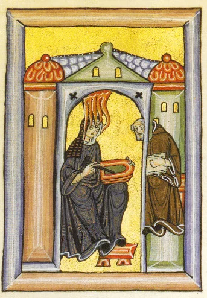

Hildegard de Bingen
- Leé esta página entera.
- Respondé en voz alta las preguntas del final y anotá lo que te costó en ✎ Mis notas.
Archivos: img/
Objetivo: conocer la vida y la obra de Hildegard de Bingen, la primera compositora de la historia de la música occidental identificada por nombre con un catálogo de obra sustancial.
Vida

Hildegard de Bingen nació en 1098 en Bermersheim, en la región del Rin, en lo que hoy es Alemania, en una familia noble. A los 8 años fue entregada, como era costumbre en familias nobles con muchos hijos, al cuidado religioso de una reclusa (una mujer que vivía encerrada en una celda dedicada por completo a la oración) y luego, a los 14 o 15 años, ingresó formalmente como monja benedictina en el monasterio de Disibodenberg. En 1136 fue elegida superiora (magistra) de la comunidad de monjas del monasterio, y en 1150 fundó su propio monasterio independiente en Rupertsberg, cerca de Bingen, del que fue abadesa hasta su muerte en 1179, a los 81 años, una edad extraordinariamente longeva para la época.
Desde niña, Hildegard tuvo visiones que ella describía como luz divina, y a partir de 1141, cuando tenía 42 años, empezó a registrar por escrito esas visiones con la autorización de su confesor y, finalmente, con la aprobación directa del papa Eugenio III en 1147, lo que le dio una autoridad y una libertad de expresión extraordinarias para una mujer de su época: pudo escribir, predicar en público (algo prohibido para las mujeres en la Iglesia medieval, salvo excepciones como la suya) y mantener correspondencia con papas, emperadores y obispos de toda Europa como una autoridad espiritual e intelectual reconocida.
Obra
Hildegard fue una de las figuras más multifacéticas de toda la Edad Media: escribió tratados de teología, de medicina natural y de ciencias naturales, además de poesía y, lo que nos interesa en este curso, música. Su obra musical más importante es el ciclo "Symphonia armonie celestium revelationum" ("Sinfonía de la armonía de las revelaciones celestiales"), un conjunto de más de 70 cantos monofónicos (himnos, antífonas, secuencias) compuestos para la liturgia de su propio monasterio, con textos también escritos por ella misma.
Su obra más ambiciosa es el "Ordo Virtutum" ("Orden de las Virtudes"), considerado por muchos musicólogos como el primer drama musical (una obra teatral cantada con personajes, no solo una colección de himnos sueltos) de la historia europea, anterior incluso a la ópera que vas a estudiar en el Barroco por casi 500 años: en él, un Alma humana es tentada por el Diablo (el único personaje que no canta, sino que solo grita, una decisión dramática muy deliberada: el Diablo, al estar fuera de la armonía divina, no puede participar del canto) mientras las Virtudes (personificadas, cantando) luchan por rescatarla.
Cómo suena su música: dentro de la tradición del canto gregoriano (monofónico, en latín, sin instrumentos en su forma original), la música de Hildegard se distingue por melodías con saltos melódicos más amplios y un rango vocal más extenso que el canto gregoriano estándar, lo que le da un carácter más intenso y expresivo, casi extático, consistente con la naturaleza visionaria de sus textos.
Por qué es importante
Hildegard es la primera compositora de la historia de la música occidental de la que tenemos un catálogo de obra sustancial identificado con su nombre (más de 70 piezas conservadas), en una época (y en una institución, la Iglesia medieval) profundamente dominada por los hombres. Su caso es excepcional no solo por su talento musical, sino porque logró, gracias a la autoridad que le dieron sus visiones y el respaldo papal, una proyección pública y una libertad creativa que ninguna otra mujer de su tiempo tuvo. Hoy es también venerada como santa por la Iglesia católica (canonizada formalmente en 2012) y declarada Doctora de la Iglesia, uno de los títulos más altos que se le puede otorgar a un santo por su aporte teológico.
Preguntas de repaso
- ¿Cómo llegó Hildegard a tener la libertad de escribir, predicar y componer públicamente, algo excepcional para una mujer de su época?
- ¿Qué es el "Ordo Virtutum" y por qué se lo considera un hito tan importante en la historia del teatro musical?
- ¿Por qué el Diablo, en el "Ordo Virtutum", es el único personaje que no canta?
- ¿Qué distingue, en términos sonoros, a la música de Hildegard dentro de la tradición del canto gregoriano?
- ¿Por qué se dice que Hildegard es un caso "excepcional" dentro de la historia de la música medieval?
Respuestas
- Porque sus visiones, que empezó a registrar por escrito a partir de 1141, recibieron primero la autorización de su confesor y luego, en 1147, la aprobación directa del papa Eugenio III. Ese respaldo papal le dio una autoridad espiritual e intelectual reconocida que le permitió escribir, predicar en público y mantener correspondencia con papas, emperadores y obispos, algo prohibido para las mujeres de su época salvo excepciones como la suya.
- Es un drama musical, una obra teatral cantada con personajes (no solo una colección de himnos sueltos), considerado por muchos musicólogos como el primer ejemplo de este tipo en la historia europea, anterior en casi 500 años a la aparición de la ópera en el Barroco.
- Porque, según la lógica simbólica de la obra, el Diablo está fuera de la armonía divina, y por lo tanto no puede participar del canto: solo puede gritar. Es una decisión dramática deliberada que usa el propio lenguaje musical (canto contra grito) para representar una idea teológica.
- Se distingue por tener melodías con saltos melódicos más amplios y un rango vocal más extenso que el canto gregoriano estándar, lo que le da a su música un carácter más intenso, expresivo y casi extático, consistente con la naturaleza visionaria de los textos que ella misma escribió.
- Porque es la primera compositora de la historia de la música occidental de la que se conserva un catálogo de obra sustancial identificado con su nombre propio, en una época e institución profundamente dominadas por los hombres, y porque logró, gracias al respaldo papal que recibió por sus visiones, una proyección pública y una libertad creativa que ninguna otra mujer de su tiempo alcanzó.